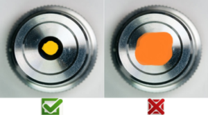
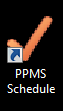

- Users who have booked the microscope have a right
to use the system within the booked time. Any other users using the
microscope at the time have to stop their work without delay if a user
who has booked the time asks them to do so. Users who find an unattended
running experiment when they reach the microscope during
their booked slot have the right to stop the experiment and sign the
previous user out from the PC. Any loss of data
resulting from such an action is the responsibility of the users who
have left the experiment running unattended outside of their booked
slot.
- If you encounter any issues with the microscope
and/or PC, report them to NOBIC staff without delay
e.g. by writing to nobic.facilities[..]e.ntu.edu.sg
or by reporting an incident in PPMS booking system.
- If you are working with infectious materials, you
need to verify that the fixation process has completely inactivated
the infectious agent. When imaging live samples
containing infectious agents, all sample carriers (culture dishes,
multiwell plates, chambered slides, etc.) must have their lids
sealed securely with parafilm to prevent spillage. Retroviral
vectors used in the samples must be non-replicative.
- If you are using oil immersion lenses, apply immersion oil
in moderation to avoid it overflowing from the lens. Clean
the lens with alcohol and lens tissue directly after
use, before switching to another objective. Never
let immersion oil stain a dry lens. If you suspect a dry
lens got stained with oil, report it to NOBIC staff without delay.
- At the end of your session lower the nosepiece (on inverted
microscope) or stage (on an upright microscope) to load
position and engage a low-magnification lens.
If you have been using CO2, make sure the
supply is closed properly. Close environmental
enclosure (where applicable) and, if you are switching
the microscope off, cover it with
dust-cover (where applicable).
- Keep the microscope room clean and tidy. Take all
your samples and other belongings with you when you leave. Samples
left behind will be disposed of when found. Dispose of your waste
properly (coverslips belong to sharp bins, ...) and observe general
practices appropriate for a BSL-2 laboratory.

- Check the booking calendar at the end of your
session (you can use the link at the desktop of all microscope PCs).
If the next scheduled session starts in less than 1.5 hours,
keep the system ON, otherwise switch it off.
- If you cancel your booked session less
than 2 hours before the scheduled session start, make sure
that the microscope does not stay switched on
unnecessarily (especially not for an extended period of time, such as
overnight or over the weekend) as a result of your cancelled session.
- If a microscope stays unnecessarily ON for an
extended period of time as a result of your negligence (because you
left it on despite no booked session following yours in < 1.5 hours
or because you have not shown up during your booked slot or because
you cancelled your session and have not taken appropriate steps - see
point 7), your group may be charged for
the time the microscope was on as if it was your microscope usage.
- Save your data only to designated data folders.
Data or other files stored elsewhere (e.g. Desktop, Downloads, ...)
can be deleted without warning.
- Copy your data to a network drive or repository as
soon as possible, ideally directly at the end of your session. Data older
than 30 days may be deleted from the microscope and image
analysis workstations to maintain enough free disk space for new data
acquisition/processing. NOBIC takes no responsibility for data stored
at the microscope and image analysis workstations.
BACK TO TOP